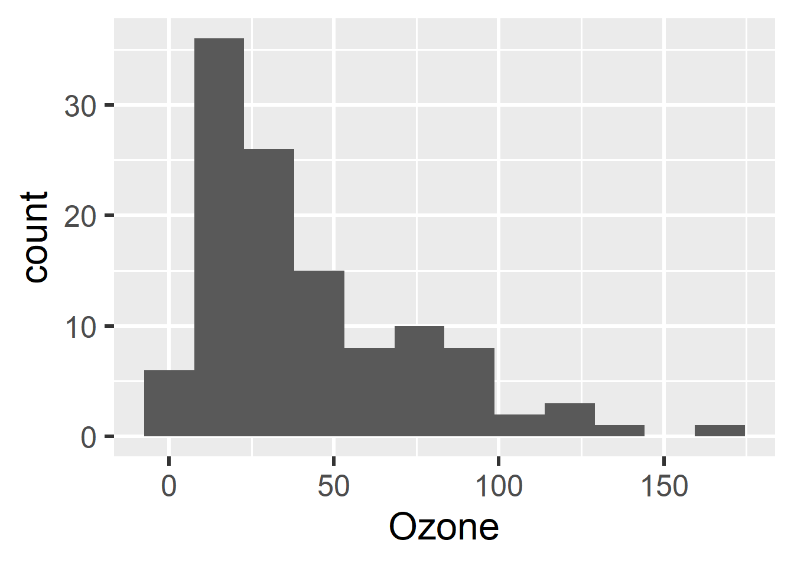

install.packages(c("biglm", "dplyr", "ggplot2", "readr", "targets", "tidyr"))Target Markdown is a powerful R Markdown interface for reproducible analysis pipelines, and the chapter at https://books.ropensci.org/targets/markdown.html walks through it in detail. This R Markdown report the example from the chapter. Try it out in both interactive and non-interactive modes, either by running the code chunks in different ways or setting the tar_interactive chunk option.
Packages
The example requires several R packages, and targets must be version 0.5.0.9000 or above.
Setup
If you are using old versions of targets (<= 0.7.0) and/or knitr (<= 1.33), you will need to load the targets package in the R Markdown document in order for Target Markdown code chunks to work.
library(targets)Near the top of the document, you may also wish to remove the _targets_r directory previously written by non-interactive runs of the report. Otherwise, your pipeline may contain superfluous targets.
library(targets)
tar_unscript()Globals
We first define some global options/functions common to all targets. The function below plots a histogram of ozone concentrations, and our histogram target will need it.
options(tidyverse.quiet = TRUE)
tar_option_set(packages = c("biglm", "dplyr", "ggplot2", "readr", "tidyr"))
create_plot <- function(data) {
ggplot(data) +
geom_histogram(aes(x = Ozone), bins = 12) +
theme_gray(24)
}
#> Establish _targets.R and _targets_r/globals/example-globals.R.Targets
Our first target borrows the airquality dataset built into base R.
tar_target(raw_data, airquality)
#> Establish _targets.R and _targets_r/targets/raw-data.R.Our next targets preprocess the data, make a histogram, and fit a model.
list(
tar_target(data, raw_data %>% filter(!is.na(Ozone))),
tar_target(hist, create_plot(data))
)
#> Establish _targets.R and _targets_r/targets/downstream-targets.R.tar_read(hist)
Set the tar_simple chunk option to TRUE to define a single target with the command in the code chunk. The chunk below only contains biglm(Ozone ~ Wind + Temp, data) in the source, but because tar_simple is TRUE, it is shorthand for tar_target(name = fit, command = biglm(Ozone ~ Wind + Temp, data)). All other arguments to tar_target() are set to their default values (configurable with tar_option_set()).
tar_target(fit, {
biglm(Ozone ~ Wind + Temp, data)
})
#> Define target fit from chunk code.
#> Establish _targets.R and _targets_r/targets/fit.R.Pipeline
If you ran all the {targets} chunks in non-interactive mode, then your R scripts are set up to run the pipeline.
tar_make()
#> ✔ skip target raw_data
#> ✔ skip target data
#> • start target fit
#> • built target fit [0 seconds]
#> ✔ skip target hist
#> • end pipeline [0.73 seconds]Output
You can retrieve results from the _targets/ data store using tar_read() or tar_load().
library(biglm)
tar_read(fit)
#> Large data regression model: biglm(Ozone ~ Wind + Temp, data)
#> Sample size = 116The targets dependency graph helps your readers understand the steps of your pipeline at a high level.
tar_visnetwork()At this point, you can go back and run {targets} chunks in interactive mode without interfering with the code or data of the non-interactive pipeline.